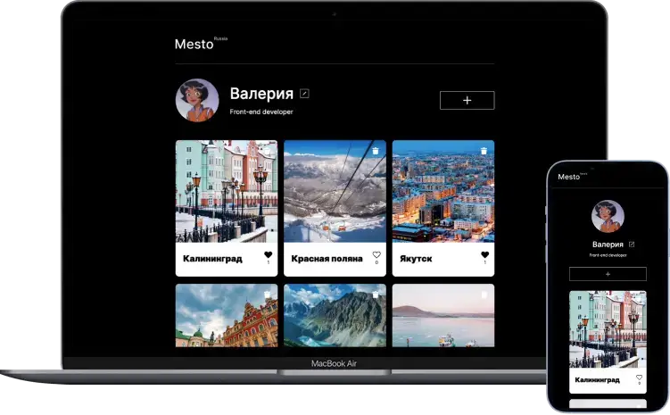

Hello!
My name is Valeria,
I'm a front-end developer
and a football fan
I am a passionate front-end developer, attentive to UX and details. In 2022, I completed Yandex Practicum Web Development Training Course and participated in the Design&Web hackathon. Now I am looking for new opportunities to develop my skills, working on my pet projects and learning Typescript.
- WHAT I KNOW
- HTML
- CSS
- Sass
- JavaScript
- React
- Node.js
- Webpack
- MongoDB
- Git
- API
- WHAT I'M LEARNING
- Typescript

My projects
Movies Explorer

A web service dedicated to documentaries about a new culture. Here you can search for movies and save them in your account.
- HTML
- CSS
- JavaScript
- React
- Express.js
- MongoDB
- API

Contacts
Do you wish to create something together, ask for my CV or just get acquainted?
Press the button below :)
You can aso find me here:
 Telegram
Telegram LinkedIn
LinkedIn